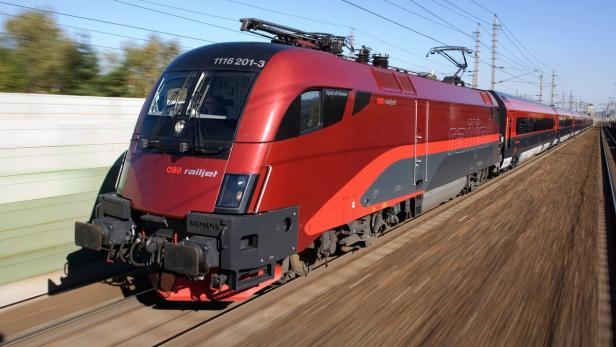

Railjet
Arbeiten, Kaffee trinken, Aussicht genießen oder entspannen? Der Railjet (RJ), der modernste Hochgeschwindigkeitszug der ÖBB Flotte, verbindet, was Ihnen wichtig ist. Kostenloses WLAN, onboard Entertainment, ein Bordrestaurant sowie Ruhe- und Familienzonen bieten Ihnen höchsten Reisekomfort. Mit einer Höchstgeschwindigkeit von 230 Kilometern pro Stunde verbindet der Railjet ganz Österreich und bringt Sie auch direkt nach Deutschland, Italien, Ungarn, Tschechien, Slowakei oder in die Schweiz. Durch direkte Verbindungen zum Flughafen Wien verbindet Sie der Railjet auch mit der ganzen Welt. Familienurlaub, Freizeittrip oder Geschäftsreise - einfach entspannt reisen. Da jeder seine eigenen Bedürfnisse hat, stehen drei Komfortklassen im Zug zur Verfügung: die Economy Class, die First Class sowie die Business Class.